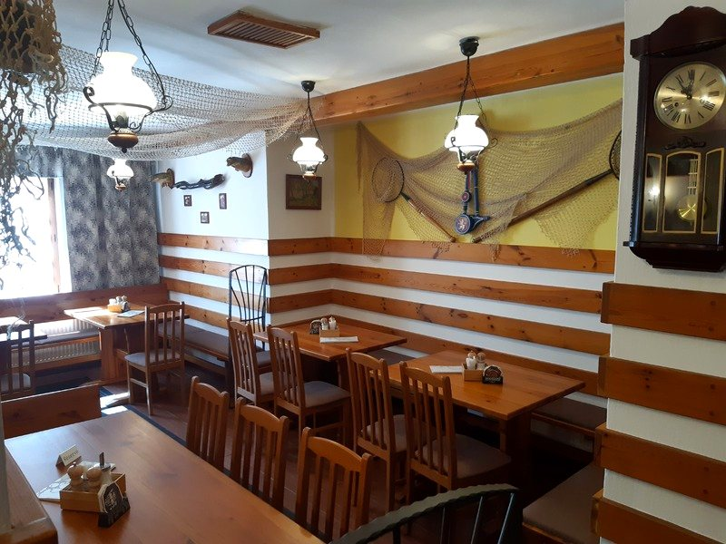
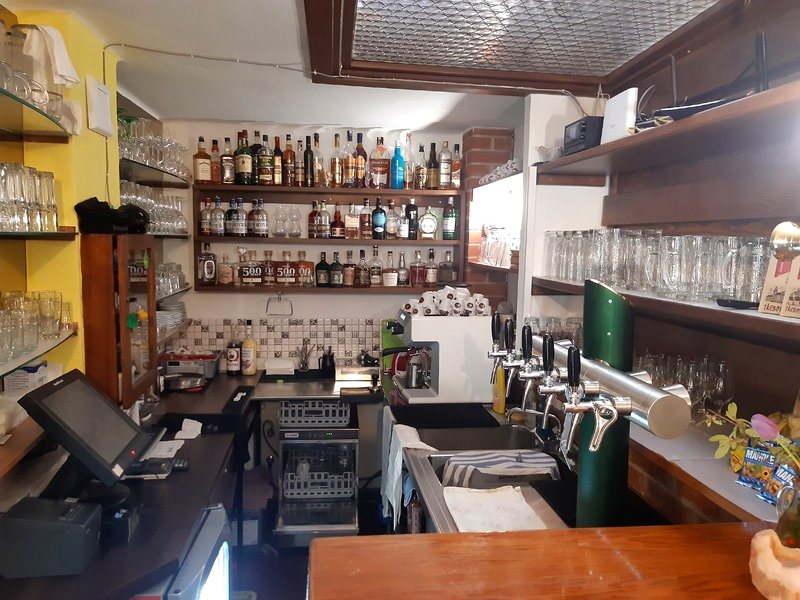
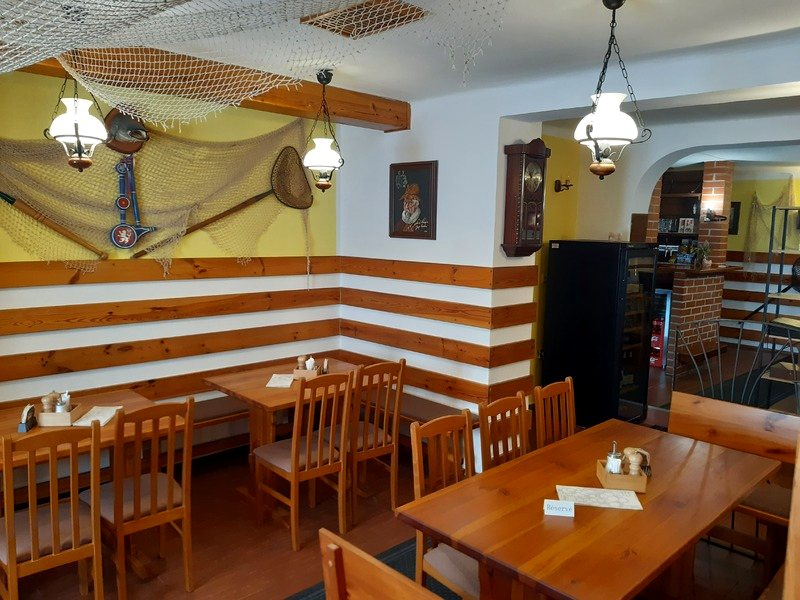
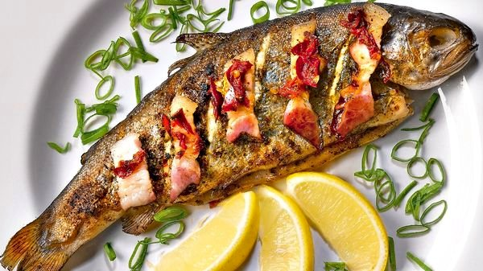
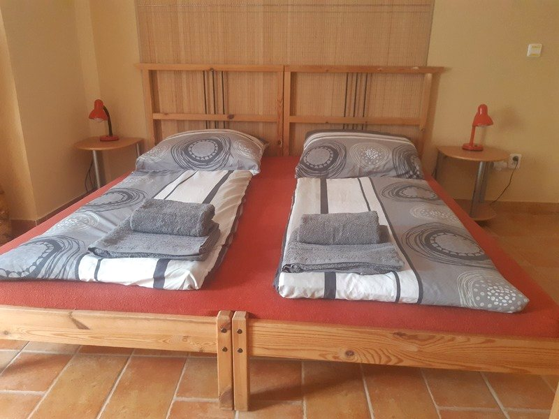
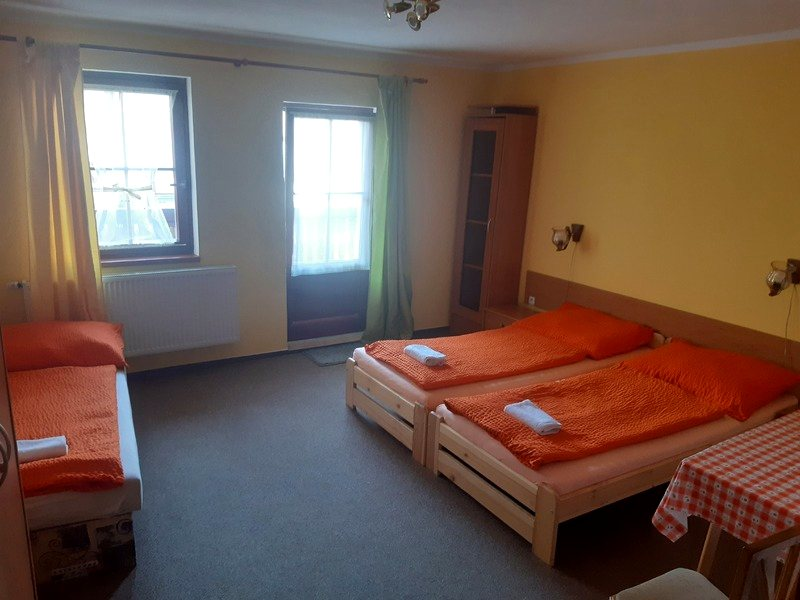

Kapr, candát i pstruh z jihočeských rybníků, poctivá kuchyně a rybářská tradice v historickém domě pár kroků od náměstí.
Rožmberská bašta stojí v historickém centru Třeboně — města, které rybám rozumí už šest století. Vaříme z ryb od místních rybářů: třeboňskou rybí polévku, kapra na desítky způsobů, candáta i pstruha na česnekovém másle.
K tomu rustikální interiér s rybářskými sítěmi, ochotná obsluha a atmosféra, do které se hosté vracejí — na Googlu nás hodnotí přes tisíc spokojených hostů.
Poctivá jihočeská kuchyně bez zbytečných příkras — ryba, oheň a čas.




Suroviny nebereme z mrazáku. Ryby k nám jezdí od rybářů z třeboňských rybníků a na talíř jdou v den, kdy je kuchyně zpracuje. Proto chutná naše kuchyně jinak, než na co jste zvyklí.
Přijeli jste na kole kolem rybníků, nebo se po večeři nechcete nikam trmácet? Přímo nad restaurací nabízíme útulné pokoje penzionu Rožmberská bašta — ideální základna pro objevování Třeboňska.
Lázně, rybník Svět, Schwarzenberská hrobka i cyklostezky kolem Rožmberka — všude to máte pár minut.
Poptat ubytování
